Palestra: user guide
How to set Palestra up, train with it every week and have it work alongside Everyday.
You're reading the computer guide. The pictures show the app on a wide screen. Where the guide says tap, on a computer it's a click. At the top, 📱 Phone shows the phone guide (your choice is kept). Click a picture to enlarge it.
This is the phone guide. At the top, 💻 Computer shows the one for a computer.
What Palestra is
Palestra tells you what to do at the gym, exercise by exercise, and remembers what you did. You set up your routines once (Chest and biceps, Legs…), put them in a workout, which is your week, and at the gym you follow the screen: set, weight, rest, where to go next.
Your data lives in your own private space on GitHub, which only you can read (and Everyday, if you connect it). The app works without signal too: it syncs when it's back online.
Palestra isn't a coach's training programme and doesn't count calories. It decides what you do: name, length and exercises. Everyday decides when.
A session is a routine you actually did: you'll find it in History.
First setup
Once, about twenty minutes. You need a GitHub account and your gym in mind: the areas and machines you use.
1. Install the app
Open Palestra's address in Chrome. On a phone choose Install app (or Add to Home screen); on a computer, Install in the address bar. From then on open it from its icon: it runs full screen and works offline.
2. Connect your GitHub space
On GitHub, create a private, empty repository called palestra-data. Then make a token for this device: Settings → Developer settings → Fine-grained tokens, access to palestra-data only, permission Contents: Read and write. Name it after the device, for example "Tom's phone".
In Palestra tap the gear, then GitHub connection. Enter your user, the repository and the token, then Save and sync.
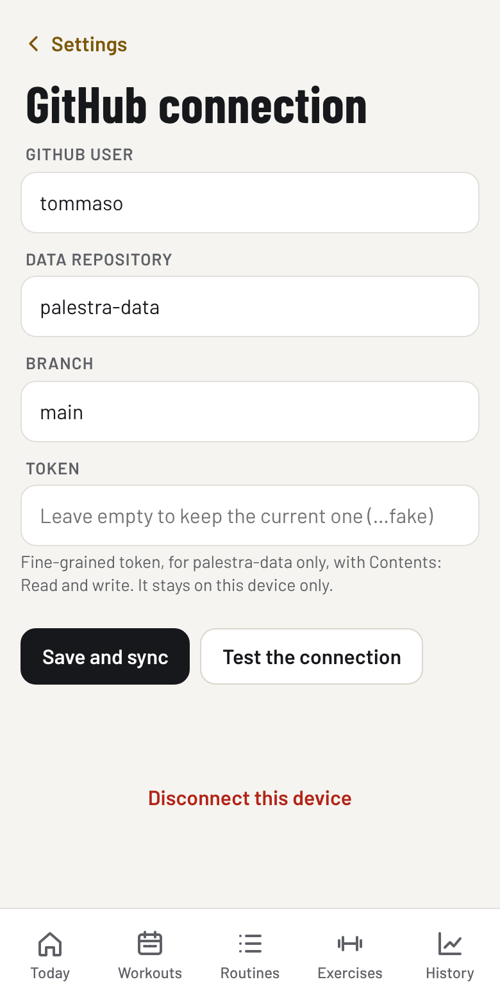

3. Map out your gym
In Exercises → Gym add the zones you move between (Entrance and cardio, Machine room, Free weights…) and tap Reorder to put them in the order you walk through them. Routines use this route so you walk less.
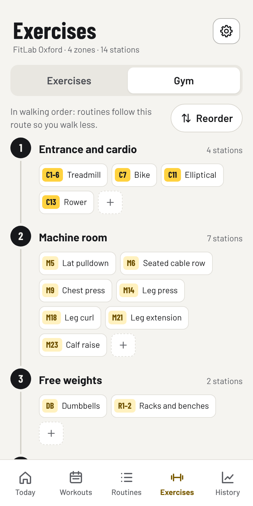

In each zone tap + to add a machine, with the number printed on it (M14, C3) and your settings (seat, back rest). Several identical machines can be one entry, like treadmills C1–6.
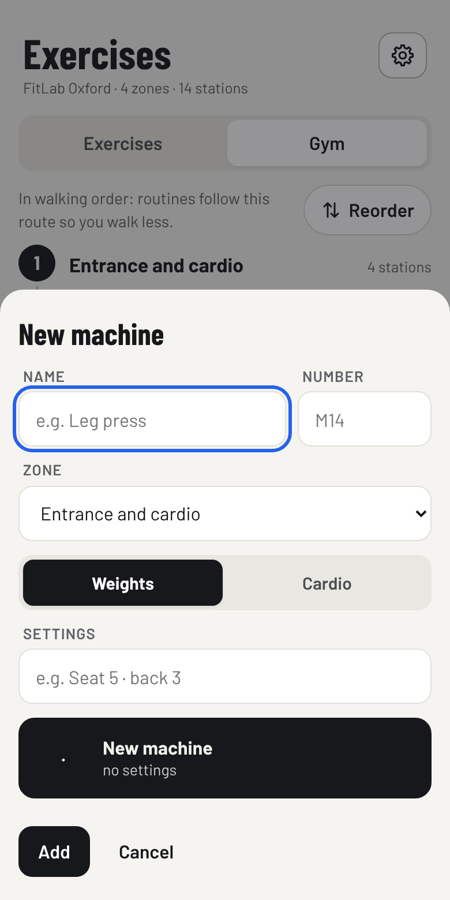

4. Add your exercises
In Exercises tap +. Pick the type (Weights, Bodyweight or Cardio), the machine and the usual rest. Notes are optional: how to do it, what to remember. You see them again during the workout.
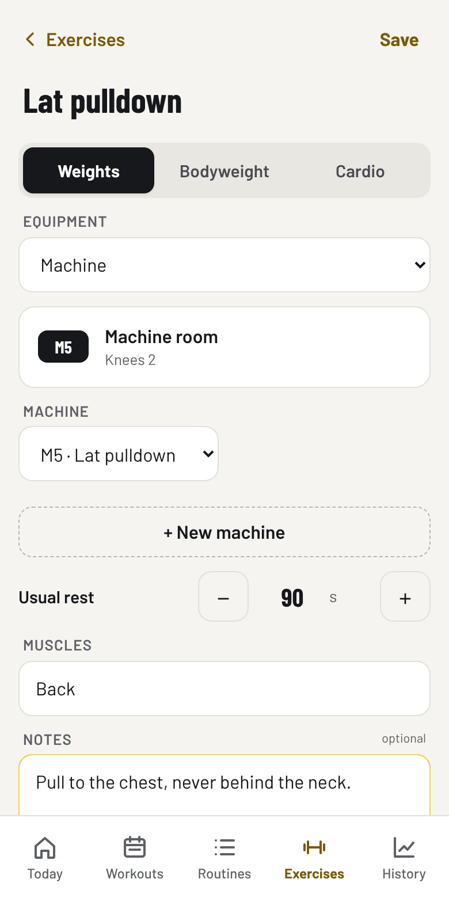

5. Make your routines
In Routines tap New routine, give it a name (say, "Chest and biceps") and add exercises with Add exercise. Tap an exercise to choose sets, reps, weight and rest. Inside a routine covers the rest.
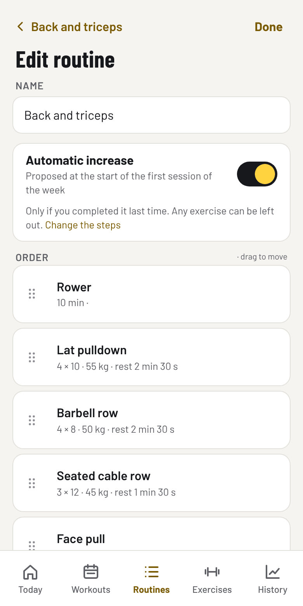

6. Optional: import a workout that's already written
If Marco, your trainer, wrote your week on a sheet or in a message, you don't have to copy it by hand. Tap Import next to New workout and paste the text: one exercise per line, the way you'd write it. Importing from text explains how to write it.
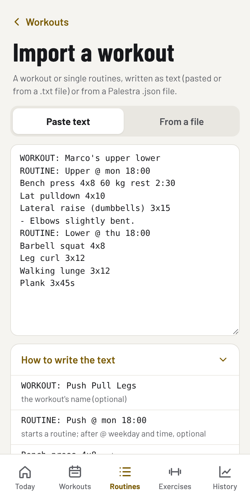

Tap Read the text. Before saving you see a preview: yours reuses one of your exercises with its machine, new creates it, check marks a bit the app didn't understand.
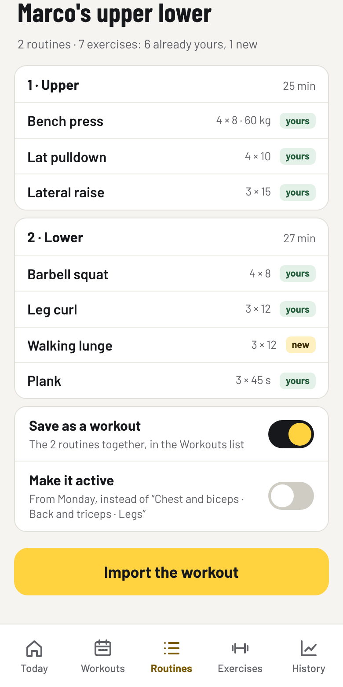

7. Make a workout active
A workout groups the week's routines, each on its day. In Workouts open one and tap Make active: from then on you see it in Today and Everyday plans it. If you switch mid-week, choose to start from Monday or from today.
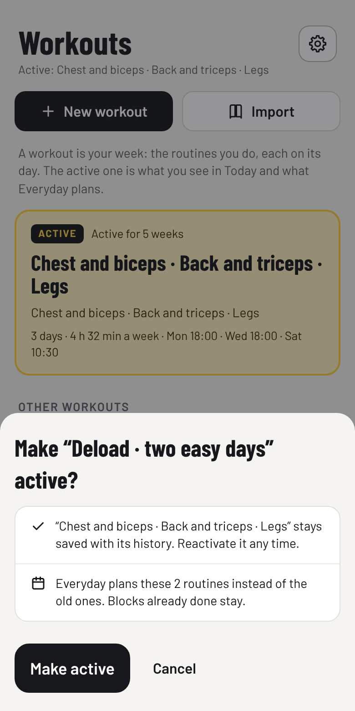

The five sections
| Section | What it's for |
|---|---|
| Today | Today's routine, the week, your last session and the month |
| Workouts | Your weeks: which routines, on which days and at what time |
| Routines | All your routines, to search, open, edit and start |
| Exercises | Your exercises and, under Gym, the zones and machines |
| History | Your progress and every session you've done |
At the top of each page are its actions, like New routine and Import. The gear at the top right opens Settings: the connection, automatic increase, rest, Everyday, language, backup and this guide.
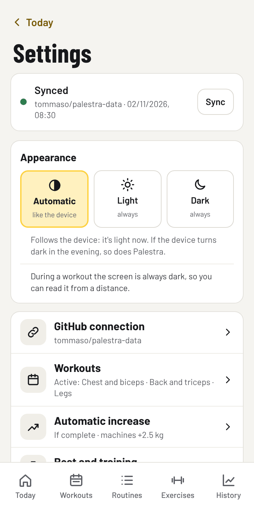

Today
The first page tells you what's on today. At the top is the day's routine, with its time if you set one, and Start. If Everyday has already put it in your plan, it says in Everyday.
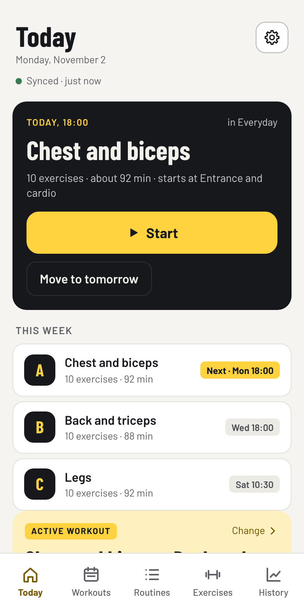

Start today's routine
Tap Start. The workout opens full screen: During the workout explains what you see.
Move to tomorrow
Can't make it today? Tap Move to tomorrow. The routine moves to tomorrow for this week only, and the list of days shows it. Back to today undoes it. If you use Everyday, the block moves there too at the next sync: at the same time if it's free, otherwise in the first free slot tomorrow.
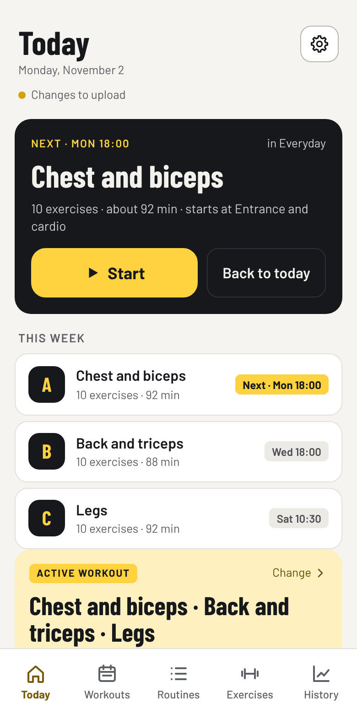

The week and the month
Below are the week's routines: the ones done, the next one and the ones left. Then the active workout with Change, your last session and a square for each day of the month, yellow when you trained.
Workouts
A workout is your week: the routines you do, each on its day. The active one is in yellow at the top; the others stay saved with their history, for when you need them (a deload week, for instance).
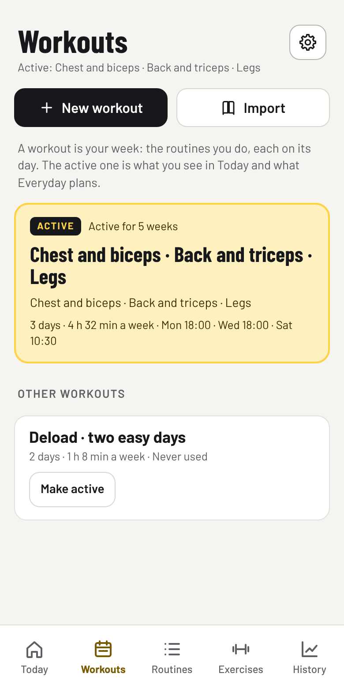

Create a workout
Tap New workout, then Add routine for each one. Drag a routine by its handle to change the order. Import, next to Add routine, adds routines written as text.
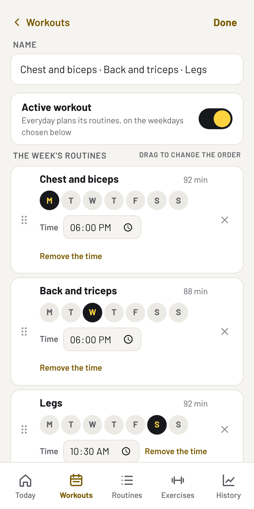

Days and times
For each routine tap the weekday (M T W T F S S) and, if you like, pick a Time. With a time Everyday puts it in your plan by itself; without one, you choose when in Everyday each week.
Change the active workout
In Workouts tap Make active on another workout. Mid-week, choose From Monday to finish the week with the old one, or From today. The old workout stays saved.
Export and duplicate
Export .txt saves the workout as text, to send to someone or import again. Duplicate makes a copy to change without touching the original.
Routines
A routine is a sequence of exercises you repeat, like "Legs". Palestra works out its estimated length from the sets and rests, and corrects it with your real times after a few sessions.
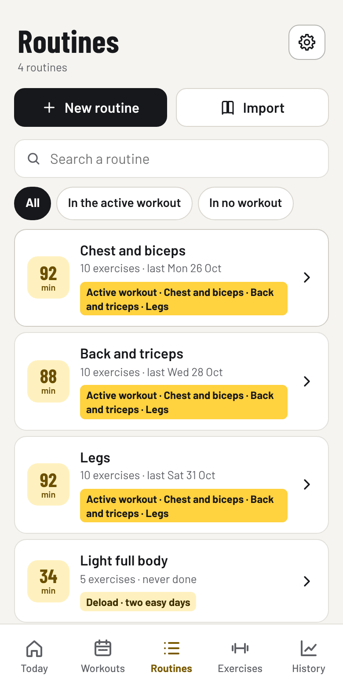

Find a routine
Type in the search, or pick In the active workout or In no workout. Under each routine you see which workout it's in.
Inside a routine
At the top: the estimated length, the sets and the zones. Then the exercises in the order you do them, with arrows where you change zone. On the right of each exercise is last time: the weight, minutes or reps from your last session.
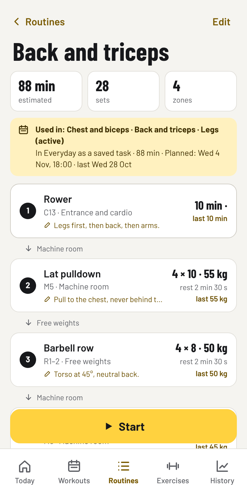

Edit a routine
Tap Edit.
| Part | What you set |
|---|---|
| Name | How you see it here and in Everyday |
| Automatic increase | Whether Palestra offers to raise your weights each week |
| Order | Drag by the handle; Sort by walking route follows your way round the gym |
| An exercise | Tap it: sets, reps or seconds, weight, rest, or Remove from routine |
| Add exercise | Pick it from the list, or make a new one |
| Import | Adds exercises written as text |
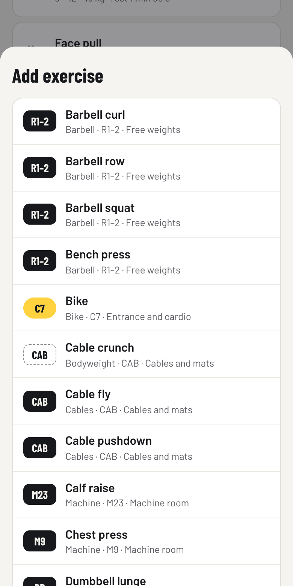

Duplicate into another workout
In a routine tap Duplicate into another workout and choose where. The copy is yours to change: the original stays as it was.
Exercises and the gym
Exercises lists all your exercises, grouped By muscle or By place. Filter by type, open and close groups, or switch to the Compact view with the button at the top to see more at once.
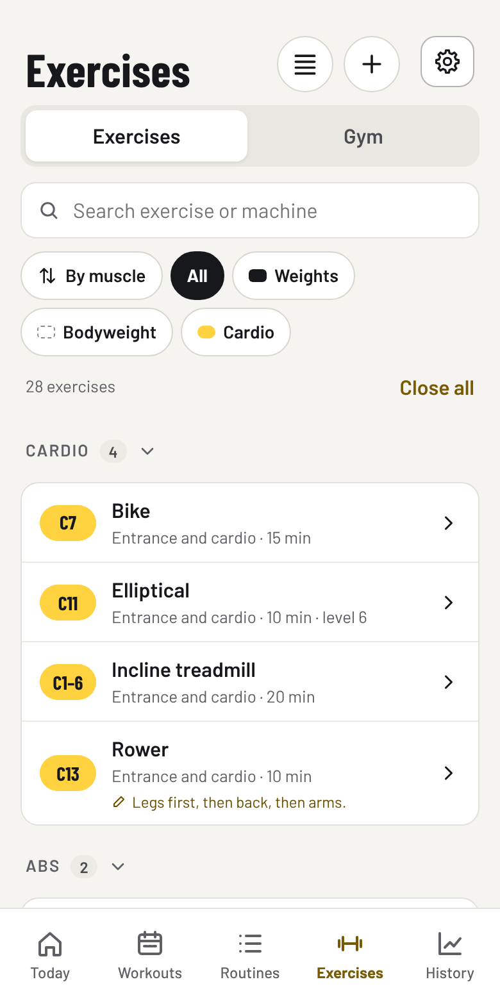

The three types
| Type | What you set |
|---|---|
| Weights | Sets, reps, kg and rest; the dark tag carries the machine's number |
| Bodyweight | Sets, reps or seconds, rest; the tag has a dashed outline |
| Cardio | The machine (treadmill, elliptical, bike, rower…) and the targets: duration, speed, incline, level |
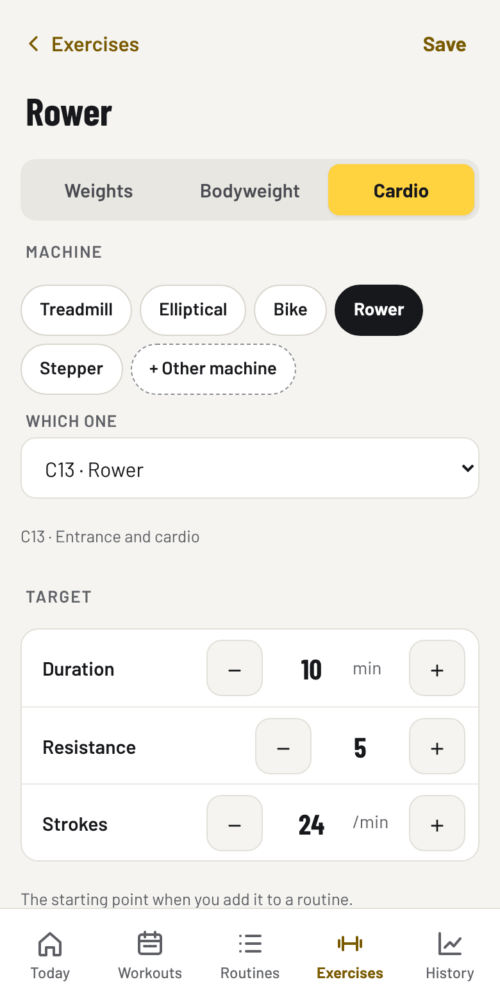

The gym: zones and machines
In Exercises → Gym you change the zones, their order and the machines in each zone. Tap a machine for its number, name and settings.
A machine that isn't listed
On an exercise's page tap New machine (or Other machine for cardio). For cardio, pick what it measures besides time, up to three things, or make your own measure with a name and a unit.
During the workout
The screen turns dark and large, stays on and works without signal. If the phone locks or the app reloads, open it again: it picks up where you were.
This week's increases
At the first session of the week, if the automatic increase is on, Palestra offers your new targets: one exercise per line, before and after. Untick any you don't want, then tap Confirm … and start, or Start with the old weights.

A set
You see the exercise, the set (2 of 4), reps and kg, the machine and its zone, and your note. If you did something different, adjust with − and +. Then tap Done.

Rest
A countdown starts, and you see how long you actually rested. +30 s adds time, Skip moves straight on. At zero the phone vibrates. Underneath is what's next and where to go.

Cardio
For cardio you see the time left and the targets, which you can change with − and +. If you like, enter the distance from the display. Tap Finish when you're done.
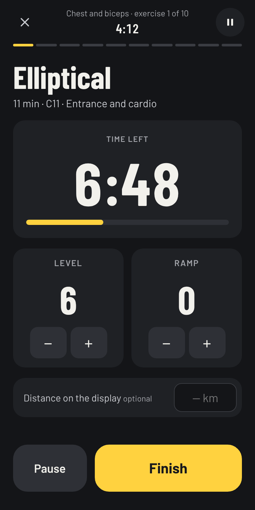

Pause and finish
Pause, at the top right, stops the clock: for a phone call or a queue at a machine. × ends early: the sets you did are saved as a partial session. At the end you get the summary: time, sets, total weight, rests and new bests.
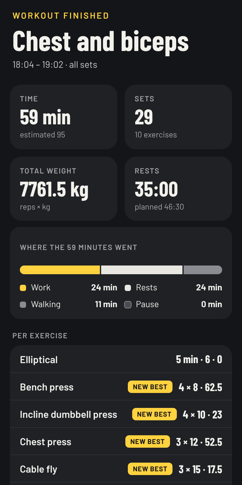

Automatic increase, in Settings
In Settings → Automatic increase choose when (If complete: only if you did every set last time; Always) and by how much per type: machines +2.5 kg, dumbbells +1, bodyweight +1 rep, cardio +1 minute. On an exercise's page you can give it its own step or leave it out.
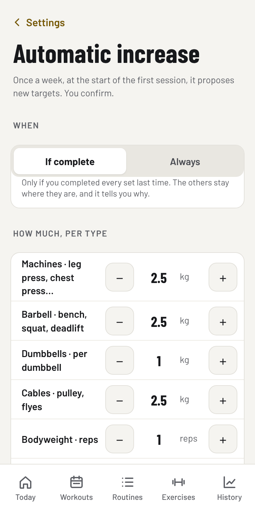

History
Pick an exercise at the top: you see how its load has grown, by how much, and the last result. Below are all your sessions, complete or partial.
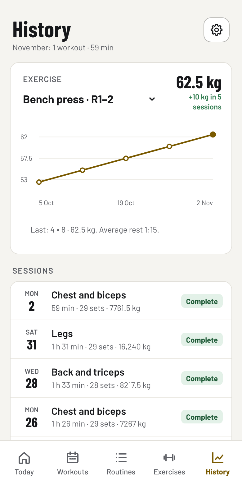

A session
Tap one to see where the minutes went (work, rests, walking, pauses) and every set you did.
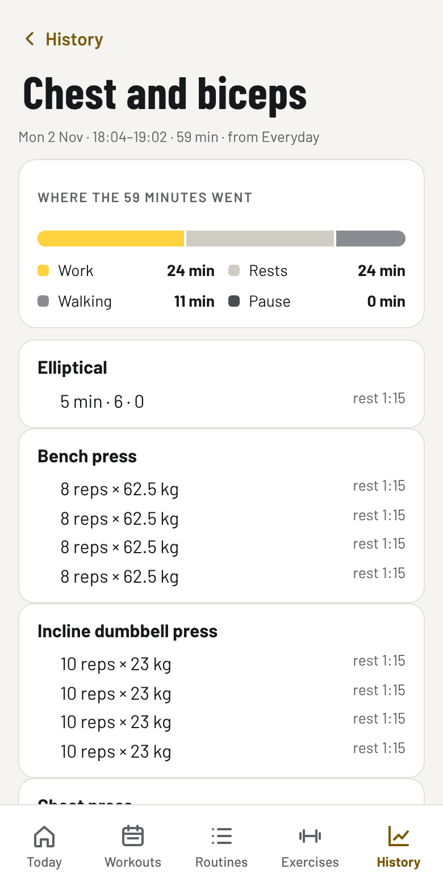

Importing from text
Next to New workout, New routine and Add exercise there's Import. Paste the text or pick a .txt file. Write it the way you would by hand, one thing per line:
| Line | What it means |
|---|---|
WORKOUT: Marco's upper lower |
The week's name (optional) |
ROUTINE: Upper @ mon 18:00 |
Starts a routine; after @ an optional day and time |
Bench press 4x8 60 kg rest 2:30 |
An exercise: sets x reps, weight and rest optional |
Plank 3x45s |
A timed exercise |
Elliptical 10 min level 6 |
Cardio, with its targets |
(dumbbells) |
The equipment, if you like: (barbell), (dumbbells), (cables), (machine) |
- Elbows slightly bent. |
A note for the exercise above |
Older files, with PLAN: for the week and DAY: for the routines, still read.
With Everyday
Palestra decides name, length and exercises; Everyday decides when. To connect them, in Everyday open Settings → Advanced → Connections → Palestra and paste a token for palestra-data with Contents: Read and write.
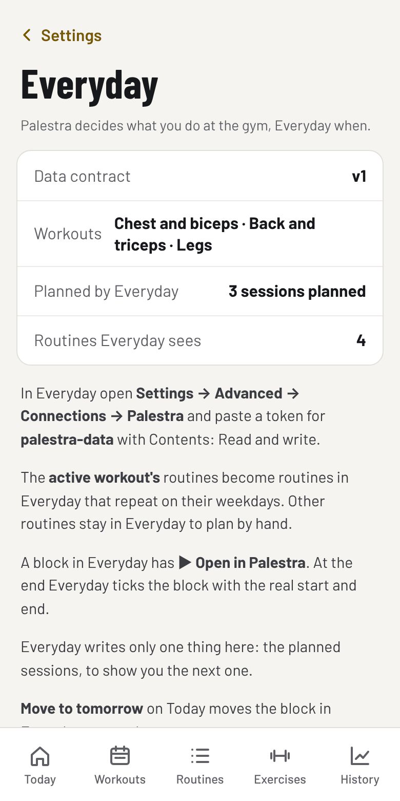

- Each routine shows in Everyday as a routine, with its estimated length.
- The active workout's routines repeat on their days by themselves, at the time you chose. You plan the others by hand.
- A workout block in Everyday has Open in Palestra: it opens that routine ready to start.
- At the end Everyday ticks the block with the real start and end, and the estimate gets closer to the real length.
- Move to tomorrow in Palestra moves the block in Everyday too, at the next sync. Back to today puts it back where it was. A block you move in Everyday shows on its new day in Palestra as well.
A typical week
Sunday evening. You open Today: the active workout is Chest and biceps · Back and triceps · Legs, on Monday, Wednesday and Saturday. Everyday has already put the three blocks in your plan.
Monday, 18:00. At the gym you tap Start. It's the first session of the week: Palestra offers the bench press at 62.5 kg instead of 60. You confirm. You follow the screen set by set; after the elliptical it sends you to the free weights, rack R1–2.
Wednesday. A work dinner. At lunch you open Today and tap Move to tomorrow: Back and triceps moves to Thursday, and after the sync the Everyday block is on Thursday at 18:00 too.
Saturday morning. Legs at 10:30. The leg press is taken: you tap Pause, wait, carry on. The waiting doesn't make the routine's estimate longer.
Sunday. In History you look at the bench press: +7.5 kg in four weeks.
On a computer
On a wide screen the sections are in the top bar, next to the app's name, as in Ricette and Everyday. On the right are the page's actions (New routine · Import), the sync status and the gear.
Pages use the width. Today and History have two columns. In Routines the list and the chosen routine sit side by side. When you edit a routine, the exercise library is on the right: search and click + to add. Exercises are laid out in a grid.
Use a different token for each device: phone and computer stay in step at every sync.
Tips and troubleshooting
Sync doesn't start. Tap the gear and look at the line at the top. If it says error 401 or 403, the token has expired or can't see palestra-data: make a new one and paste it in GitHub connection. With 404, the user or repository name is wrong.
The screen turns off during a workout. Exclude Palestra from your phone's battery saving, and check that the screen-on option is switched on in Rest and training.
The block isn't ticked in Everyday. Sync Palestra (gear → Sync), then Everyday.
An Update bar appears. A new version is out: tap it when you're not training.
You want a copy of everything. Settings → Backup downloads all your data as one file. The GitHub repository also keeps every past version.